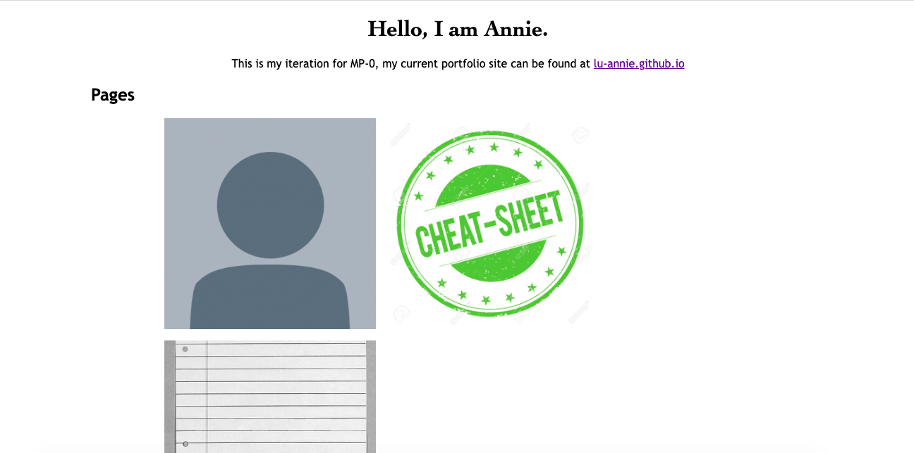

Overview: 1. I created a new GitHub page and cloned the GitHub repository and example site 2. I opened the html and css files in HTML 3. I edited index.html first, then the bio.html, and so on 4. Then, I changed the CSS for all pages to be consistent, starting with colors, then images, then fonts 5. Commited changes to GitHub for a working site  Issue: I wanted to change the fonts on my page so I edited in the body section of the CSS, but it didn't work. I realized it needed a semicolon and fixed it by putting a semicolon after the new font and it resolved the error. CSS Transition: I picked the CSS transition that changes the text color when you hover over something because I wanted something simple and subtle that would still be impressive when in action. I made this work by putting "h1:hover{ color: #ff10f0; }" in the index.css file. Ideas and Future: